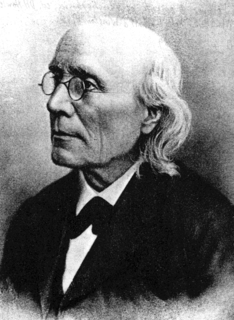

History of Experimental Psychology
Wilhelm Wundt (1832-1920) and Gustav Fechner (1801-1887) are considered the originators of experimental psychology. Before Fechner and Wundt began their research, psychology was focused in the realms of physiology and philosophy instead of experimentation. Fechner performed his research with scientific rigour and it was this rigour which laid the foundations for experimental psychology as we know it today. This new psychology was based on the scientific method. Wundt was the first person to call himself a psychologist and the first person to formally establish a psychology laboratory in Leibzig, Germany.
With the expansion of psychology as a discipline in the latter half of the twentieth century, and the growth in the size and number of its subfields, the phrase experimental psychology has come to cover too broad an area to be much used now. Most psychologists identify with a smaller field such as cognitive or comparative psychology. Most psychologists use a range of methods rather than confining themselves to a strictly experimental approach, and developments in the philosophy of science have lessened the exclusive prestige of experimentation. The experimental method is now widely used in fields such as developmental and social psychology. These fields were not part of experimental psychology as it was originally conceived. (from http://serendip.brynmawr.edu/Mind/Consciousness.html)
In summary, psychologists in many fields continue to experiment. The information gained from such research is used not only in experimental psychology, but in general psychology and other disciplines as well.
